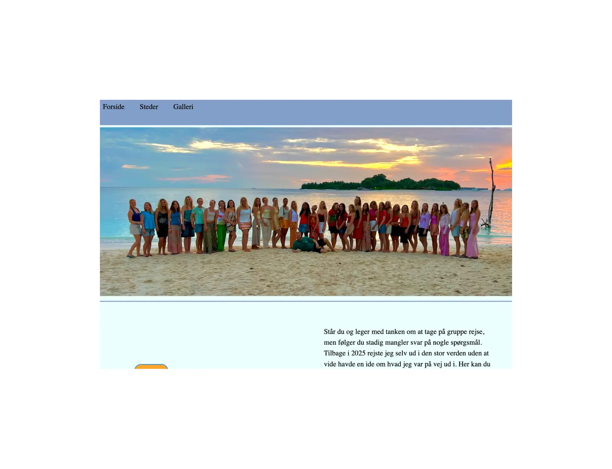

TEMA 3 - UX/UI

Løsning
På tema 3 skulle vi lave et site med et valgfrit emne. Det er også her vi for første gange skulle lave vores hjemmeside fra bunden af. Jeg valgt at lave et site som tog ugangspunkt i en grupperejse jeg var på i 2025.
Process
Jeg startede med at udarbejde, styletiles og moodboards for at danne mig en ide om hvordan siden skulle se ud.
Før jeg kunne begynde at kode lavede jeg wireframes og en klikbar prototype, over de forskellige sider, for at danne mig
det fulde billede at slut resultatet.
Reflektion
Jeg valgte farverne på siden, for at skabe en stemning at strand, hav og sol. Jeg kan godt, ærge mig over jeg ikke lavede en brugerteskt for at vide hvad brugen vil havde, og ikke hvad jeg syntes var pænt. Havde jeg lavet sitet idag havde jeg arbejde med andre farver.